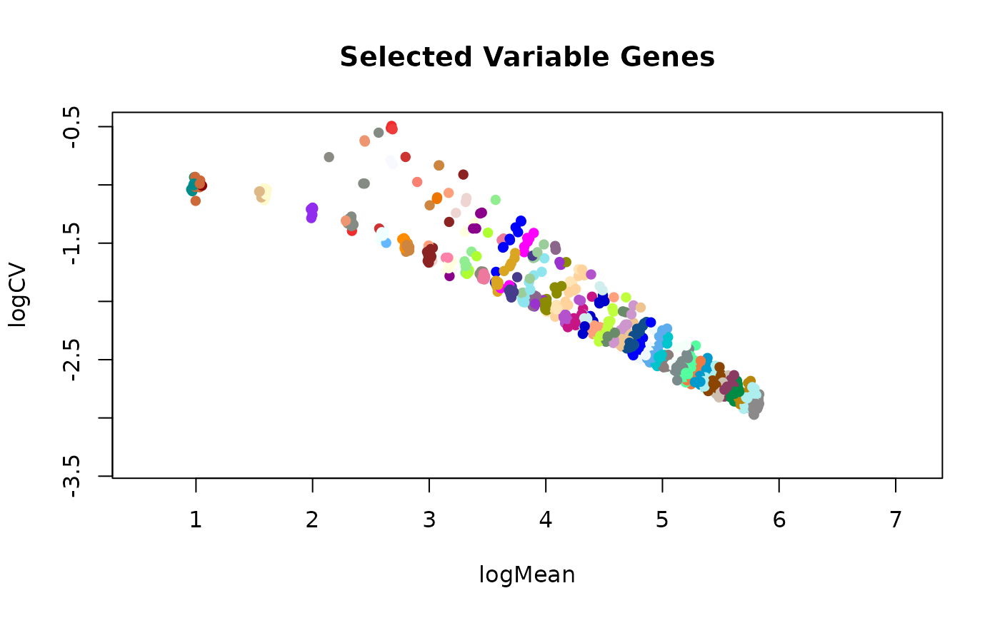
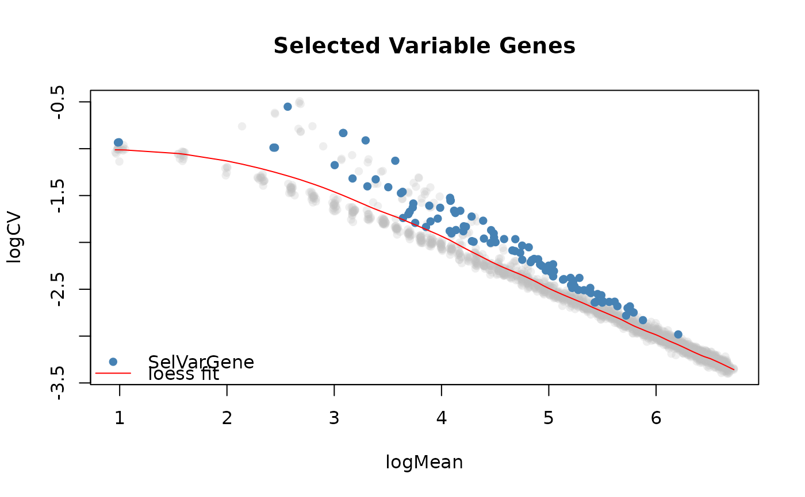

This function selects the most variable genes from a SingleCellExperiment object
using the plot that displays the log2 coefficient of variation as a function of the log2 mean for
all genes across all the cells.
selVarGenes( data = NULL, assay.type = "counts", logPseudo = 1, Nmads = 3, minCells = 5, minExpr = 1, exclTopExprFrac = 0.01, span = 0.2, control = stats::loess.control(surface = "direct"), nBins = 100, nBinsDense = ceiling(nrow(data)/4), ... )
| data |
|
|---|---|
| assay.type | the type of assay to use if |
| logPseudo | pseudo-count to use when using the logcounts slot from the |
| Nmads | number of MADs beyond which genes are selected per bin. |
| minCells | keep genes with minimum expression in at least this number of cells. |
| minExpr | keep genes with expression greater than or equal to this in |
| exclTopExprFrac | the fraction of top expressed genes that will be excluded from the loess fit (value between 0 and 1). |
| span | span parameter for |
| control | control parameters for |
| nBins | number of bins or groups to place the points(genes) into. |
| nBinsDense | number of bins or groups to use to place the points(genes) into when calculating more accurate distance values to the curve from the loess fit. |
| ... | additional parameters for the |
a list of length 2:
varGenes: vector containing the names of the most variable genes.
geneInfo: data.frame with genes as rows and columns containing
calculated measures:
logMean: log2(mean) expression of genes across cells.
logCV: log2(coefficient of variation) of genes across cells.
pred_logCV: predicted log2(coefficient of variation) from loess fit.
assigned_bin: bin each gene has been assigned to.
distance: accurate distance measuses. Points below the loess fit get a negative sign.
The function takes in a SingleCellExperiment object and calculates the normalized
counts by dividing the raw counts by the corresponding sizeFactors per cell, or a matrix of already normalized counts.
Only genes that have an expression greater than or equal to minExpr in at least minCells cells will be
kept. If assay.type is set to 'logcounts', that assay is transformed back to the raw normalized count space
by performing 2^logcounts(data) - 1, under the assumption the logcounts data is in log2 form and had a pseudocount of 1.
The genes that vary most on the log2(coefficient of variation) vs log2(mean) plot of genes will be selected. A loess fit is done on this plot and the distance (euclidean by default) each point has to the curve is calculated in two steps.
In the first step, genes are assigned to bins by taking the minimum distance to the curve. By default
we select 100 points on the loess fit and calculate the distances each gene has to all those points on
the curve. Each gene is assigned to the point on the curve for which it has the shortest distance. In
the second step, more accurate distances to the curve are calculated by using a higher number of
points on the curve. Distances are calculated using the dist.matrix function.
Finally, for each bin, the most variable genes are selected using the more accurate distance
measures. Genes that fall below the loess fit are assigned a negative sign and the genes that
are Nmads MADs away from the median are selected.
Dania Machlab
# packages library(SingleCellExperiment) # create example count matrix # ... poisson distr per gene mu <- ceiling(runif(n = 2000, min = 0, max = 100)) counts <- do.call(rbind, lapply(mu, function(x){rpois(1000, lambda = x)})) counts <- counts + 1 # ... add signal to subset of genes (rows) and cells (columns) i <- sample(x = 1:nrow(counts), size = 500) j <- sample(x = 1:ncol(counts), size = 500) counts[i, j] <- counts[i, j] + sample(5:10, length(i), replace = TRUE) # create SCE sce <- SingleCellExperiment(list(counts=counts)) # calculate sizeFactors libsizes <- colSums(counts) sizeFactors(sce) <- libsizes/mean(libsizes) # select variable genes varGenes <- selVarGenes(sce, assay.type="counts")#>#>